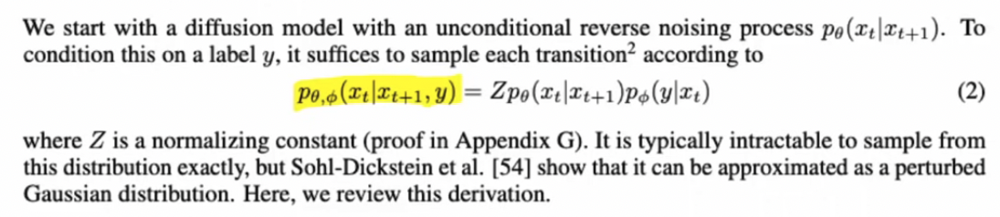
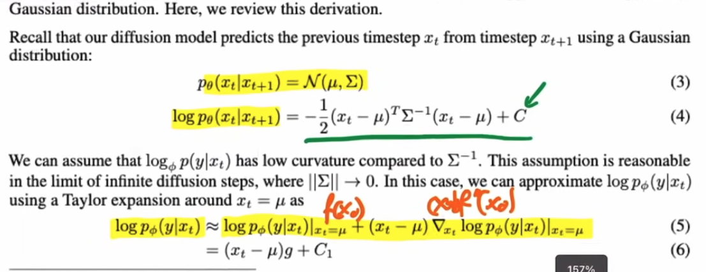
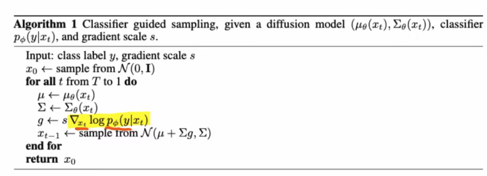
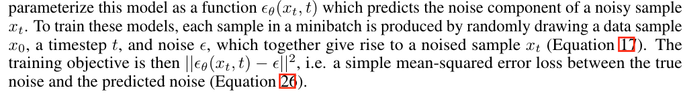
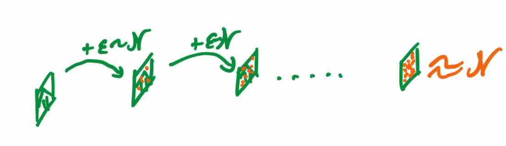
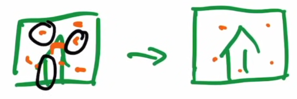
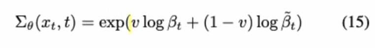
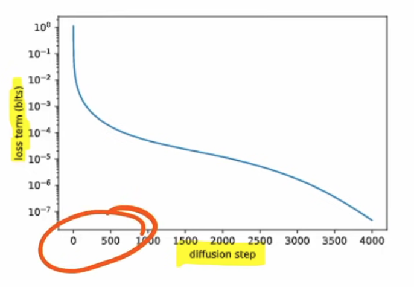

[TOC]
- Title: GLIDE: Towards Photorealistic Image Generation and Editing with Text-Guided Diffusion Models
- Author: Alex Nichol et. al.
- Publish Year: Dec 2021
- Review Date: Jan 2022
Summary of paper
In author’s previous work, the diffusion model can achieve photorealism in the class-conditional setting by augmenting with classifier guidance, a technique which allows diffusion models to condition on a classifier’s labels.
- The classifier is first trained on noised images, and during the diffusion sampling process, gradients from the classifier are used to guide the output sample towards the label.
classifier details
- once you have class label, I add additional probability distribution in the formula to guide the model


Algorithm of previous work (classifier guided sampling)

So this work extend label classifier to Natural language
- by encoding texts into embeddings and feed into each diffusion layer
Some key terms
diffusion model
diffusion models sample from a distribution by reversing a gradual noising process
- sampling starts with noise x_T and produce gradually less noisy samples x_T-1, x_T-2, .. until reach a final sample x_0.
- each timestep t corresponds to a certain noise level. and x_t can be thought of as a mixture of a signal x_0 with some noise e where the signal to noise ratio is determined by timestep t.
- a diffusion model learns to produce a slightly more “denoised” x_t-1 from x_t

Theory behind diffusion model
- we can add noise again and again and eventually we can get random noise image

- then we try to invert it.

Improvements
- Rather than model the denoised image’s mean, it predict the noise itself.
- fix the covariance of the gaussian distribution is good enough
- further more, learning a interpolation covariance parameter is even better than fixed one

- further more, learning a interpolation covariance parameter is even better than fixed one
- give different weight to gradient at different step t (the first few steps are much more important)

Good things about the paper (one paragraph)
Major comments
Minor comments
Check the paper reading video:
Incomprehension
Potential future work
“text to image” task has some similarity with “text to goal state/desired action” task for Text-based RL environment.
diffusion model and denoising process share some similarity with the “training with masking” idea.